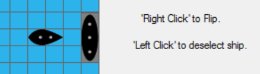
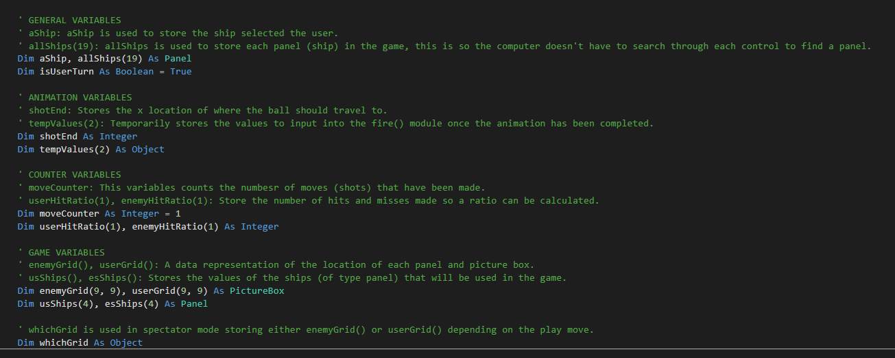
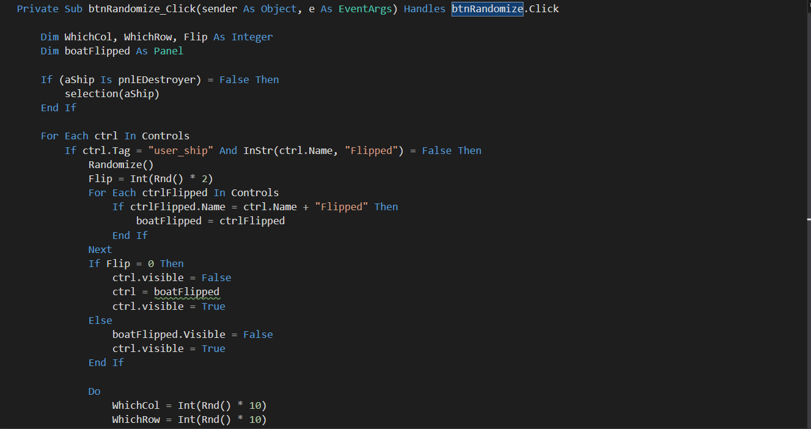
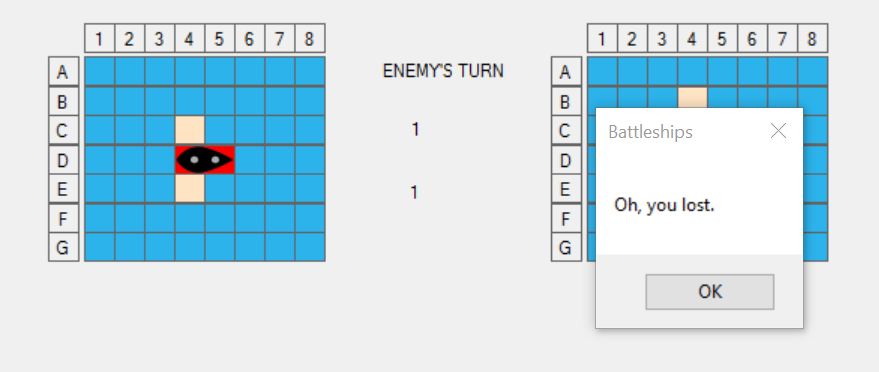

January Posts
Aesthetics
Post by Jonah Smith, Jan 30, 2017.
- With the main procedures of my program complete, today I focused on creating graphics and music to generate an aesthetic quality to my game. I used photoshop to create an initial logo however moved to illustrator to design the logo below which is the best I could manage with my mediocre illustrator skills. Use of such resources are a positive feature of Visual Studio which supports their integration quite effectively and easily in its resources tab of the solution project. I can then retrieve and data using simple functions such as My.Computer.Resources… Unfortunately, I have been delaying completing the written report component of this task and aim to start on that next.

User Controls
Post by Jonah Smith, Jan 22, 2017.
- The work I completed today was to redesign the user control module to create an easier experience for the user. The user now controls each ship with their mouse, rather than as previously using the arrow keys in a slower process. To do this I was able to use a lot of the same code modules such as selection(), only having to change minor parameters and use the mouse click event instead of the arrow keys. I have now developed and implemented the main requirements and functionality of the program. A player can play a game against the computer and result in a win or loss. I have imported all the ships which were easy to integrate as I had designed my modules around their introduction. With the main features completed I can focus on aesthetic qualities and minor components which add to the enjoyment of the game. Additionally, I should bear in mind the completion of a user manual.

Cleaning
Post by Jonah Smith, Jan 16, 2017.
- Today I removed, rearranged and cleaned some modules and procedures in my program. When developing, my methodology seems to be to experiment first to produce results, thus often I have to return to reorganise my work into a more coherent and manageable hole in order to attain the properties of well written code. I added lots of comments as well.

Randomise
Post by Jonah Smith, Jan 09, 2017.
- After having developed a module for the computer to randomly arrange their ships on a grid (all of one ship) I also I developed a module for the user to randomise their ships on their grid. I used the randomise function for the enemy’s grid as a template – I had to change a few methods and variables which was a mucky process however I eventually completed it. At the moment, I have only one ship in my game and planning my code to be able to work with more than one. Additionally, I discovered Visual Studio does not allow controls to be rotated on any angle which is unfortunate when I need to the user to possess the ability to flip each ship. To overcome this, I have to create a duplicate boat which is vertical instead of horizontal unfortunately doubling the number of ship controls. At the moment, this method of flipping is quite crude however I hope to in some way be able to refine it.

Pattern Algorithms
Post by Jonah Smith, Jan 01, 2017.
- Today I implemented the beginnings of what seems to be the most challenging aspect yet - the AI component where the computer uses logic when selecting what square to target. I have been able to get the computer to hit a square around a previously hit square tagged 'hit', however there seems to be an error in my logic. At times the computer ignores the past hit and either hits a random shot on the grid instead of around the ship. Currently the computer can’t place their ships on the grid something I am going to tackle next.
